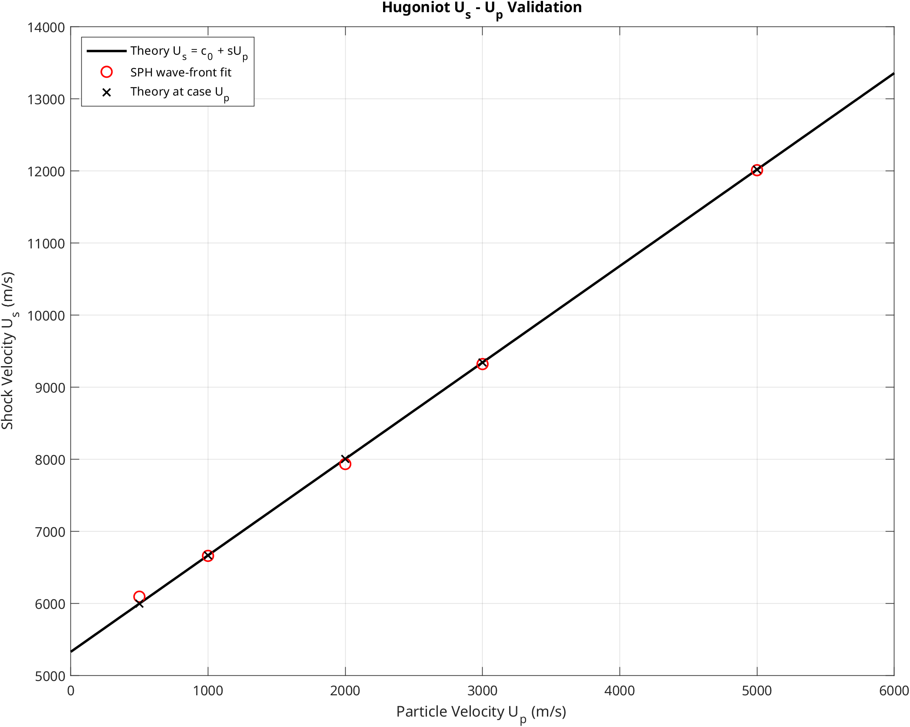
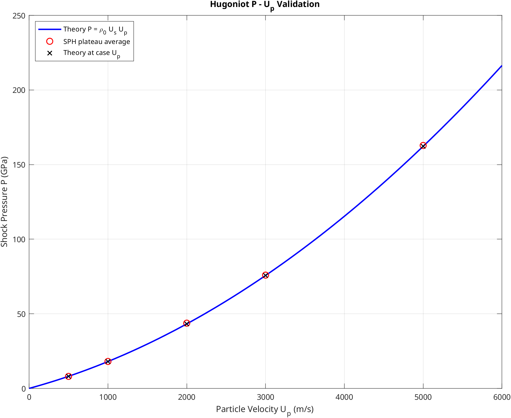

铝材料 Mie-Gruneisen Hugoniot 验证
概述
本算例验证 GASPHiA 中 Mie-Gruneisen 状态方程对铝材料冲击响应实现的正确性。方法为：在一维杆件右端施加刚性活塞，扫描多组活塞速度 U_p，然后从模拟结果中提取
- 冲击波速
U_s - 波后压力平台
P
与理论 Hugoniot 关系
进行对比。
算例实际扫描了 500, 1000, 2000, 3000, 5000 m/s 五组速度，结果整体稳定：
U_s相对理论误差约在0.07% - 1.60%P相对理论误差约在0.30% - 1.15%
---
验证目标
与弹性单轴应变波算例不同，本算例的验证重点已从线弹性波速和偏应力平台转向冲击压缩后的热力学响应。对于给定的材料模型，冲击波前后的状态必须落在对应的 Hugoniot 曲线上，才能保证热力学一致性。
本算例采用一维铝靶和右侧移动刚性活塞，通过不同活塞速度生成不同强度的冲击波。对每个速度 case，后处理步骤为：
- 从多帧输出中拟合冲击波前位置，得到数值波速
U_s - 在稳定波后平台上对压力和粒子速度取平均，得到数值
P和U_p
---
理论关系
本算例采用的铝材料 Mie-Gruneisen Hugoniot 线性关系为：
参数取值为：
- 初始密度：
\rho_0 = 2700 kg/m^3 - 体积声速：
c_0 = 5328 m/s - Hugoniot 线性斜率：
s = 1.338
在这个验证框架下，数值结果应该回答两个问题：
- 拟合得到的
U_s是否沿着理论直线U_s = c_0 + sU_p排列 - 提取出来的波后压力
P是否沿着理论曲线P = \rho_0 U_s U_p排列
只要两者均成立，即可确认 EOS 的基本 Hugoniot 响应是可靠的。
---
运行方式
测试目录：
GASPHiA-Tests/AluminumMieGruneisenHugoniot
执行以下命令启动：
./run_all.sh --source-dir /path/to/GASPHiA --cuda 0
脚本自动完成以下步骤：
- 编译输入生成器
gen_input_hugoniot - 使用本目录的
para.cuh编译 GASPHiA - 依次运行
500, 1000, 2000, 3000, 5000 m/s五组活塞速度 - 将每组输出归档到
output_sweep/output_V*/ - 提取
U_s、U_p和P并生成 Hugoniot 对比图
与其他验证算例一致，本算例通过 PARA_CUH 引用测试目录自有的编译参数，不修改主源码树中的参数文件。
---
结果解读
U_s - U_p 关系

该图的核心信息是：模拟提取的冲击波速点基本沿理论直线分布，未出现系统性偏离。对于冲击波问题，这是判断 EOS 波速响应是否正确的基本验证关。
P - U_p 关系

该图展示的是波后压力平台。相较于波头位置，波后压力对 EOS 的热力学输出更加敏感。图中模拟点与理论曲线吻合良好，表明波后压力提取与 EOS 响应之间的一致性较高。
---
实际运行数据
本次速度扫描结果如下。
| Case 活塞速度 | 数值 Up | 理论 Us | 数值 Us | Us 相对误差 | 理论 P | 数值 P | P 相对误差 |
|---|---|---|---|---|---|---|---|
500 m/s | 500.04 m/s | 5997.00 m/s | 6093.02 m/s | 1.60% | 8.096 GPa | 8.032 GPa | -0.79% |
1000 m/s | 1000.02 m/s | 6666.00 m/s | 6659.35 m/s | -0.10% | 17.998 GPa | 18.052 GPa | 0.30% |
2000 m/s | 1999.93 m/s | 8004.00 m/s | 7933.33 m/s | -0.88% | 43.222 GPa | 43.719 GPa | 1.15% |
3000 m/s | 2999.66 m/s | 9342.00 m/s | 9319.76 m/s | -0.24% | 75.670 GPa | 75.895 GPa | 0.30% |
5000 m/s | 4999.44 m/s | 12018.00 m/s | 12009.28 m/s | -0.07% | 162.243 GPa | 162.792 GPa | 0.34% |
从上表可得出两点结论：
其一，活塞速度平台提取稳定，数值 Up 与设置值非常接近，表明波后平台识别区域选取合理。其二，Us 和 P 两个核心量均未随冲击强度升高而明显发散，说明该版实现并非仅适用于某个低速 case，而是在整段速度范围内均保持了良好的一致性。
---